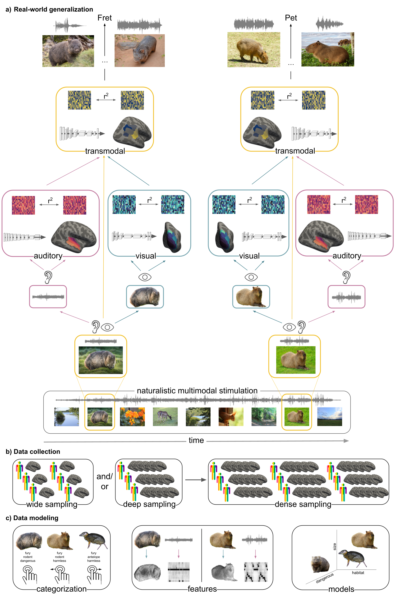
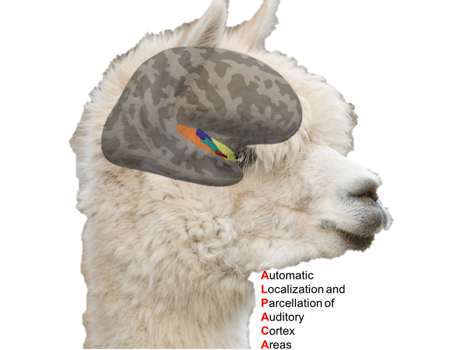
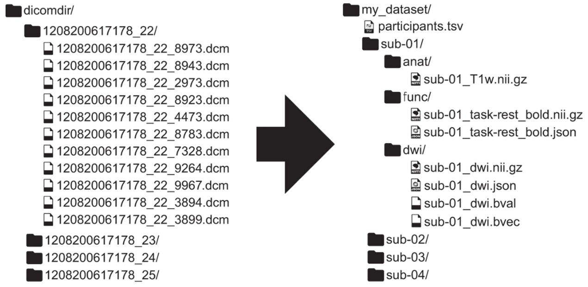

Building upon my research in auditory processing, I investigate generalization in biological and artificial agents and the potentially underlying transformations as a basis for intelligent behavior. More specifically, I’m interested in the computations and resulting transformations agents and systems conduct from incoming sensory information along a processing cascade to achieve abstract representations that allow generalization across contexts and modalities. Within that I furthermore focus on the how these processes can be compared between biological and artificial networks, as well as how the first can inform the latter to achieve a better performance. Here, I utilize fMRI and ANNs on a broad range of tasks, including “classic” and but especially naturalistic paradigms.

If the auditory system is one thing, it’s wild. Despite recent advantages with regard to data acquisition and analyses, the functional organization and principles of the auditory system are still a highly adventurous endeavor. Among others, this especially concerns the structure-function relationship of the auditory system, its diverging pathways, as well as the information transfer between its cortical and subcortical areas. To this end, I use ultra high field (f)MRI to investigate possible functional specializations along the auditory pathways, its underlying structural properties and anatomical, resting-state based as well as task-based connectivity pattern. Our normal all day life is full of an ever changing and highly complex soundscape. How and during which time point during auditory perception those countless sound categories emerge in the cortical and subcortical auditory pathway is not only a very interesting, but also challenging question. For a quite a while I’m particularly fascinated by the cortical interaction of music, singing and language, which I investigate through combined MRI & EEG, analyzing subsequent data using different connectivity and machine learning approaches. Additionally, possible factors of influence such as musical training and handedness are an important part of this research question. As music is as divers as mysterious to such an extent that it’s hard or nearly impossible to actually define it, I’m interested how music processing, especially perception, is shaped, how it can be described and possibly approximated. To hopefully shed some light on this rather overwhelming question I investigate how human and non-human brains perceive and represent different music genres and how these representations can be evaluated based on auditory/music features, as well as conceptual and computational models. To do so I apply a broad range of methods, ranging from imaging (MRI & EEG) to behavior to artificial neural networks furthermore including important factors such as development (culture & music preference) and plasticity (musical training).
Fellow folks working in auditory neuroscience know the somewhat struggle that goes along with this line of research, especially within the realm of MRI: due to the nature of the stimulus experiments can be harder to implement, take way longer, SNR is far from being good and whatnot (make sure to check Jonathan Peelle’s amazing review on that topic). Hence, working on how experiments can be improved is (like usual) as much as important as actually doing them. I’m therefore also very interested in improving settings for auditory neuroscience experiments. To this end, I’m e.g., working on MRI aqusition parameters and sequences (for example ISSS & multiband) and a small toolbox called ANSL that allows audiometry measurements in the MRI environment. Another highly discussed problem is the reliable localization and parcellation of auditory cortex areas. Glasser at al. summarized it quite well in their 2016 “A Multi-modal Parcellation of Human Cerebral Cortex” paper when they were stating “In contrast to early visual and somatomotor cortex, parcellation of the early auditory cortex has proven much more challenging…” (Suppl. 3, page 35, line 7-8 ). The robust and reliable localization and parcellation of the human auditory cortex, along with it’s functional principles has been the subject of a long-standing debatte with the vast amount of possible analyses that to can be applied to the variety of possible measurements adding yet another layer of complexity. Based on that I started developing ALPACA, an open-source python toolbox for the “Automated Localization and Parcellation of Auditory Cortex Areas” (full disclosure: I had the abbreviation first and then tried to come up with a fitting name, luckily that worked out pretty well) which will include experiment and analyses scripts for different paradigms (natural sounds & classic tone bursts) and approaches (structural parcellation, mapping of auditory ROIs from atlases, fMRI, EEG, searchlights, encoding, etc.). The respective parts can be combined as preferred and run as functions or fully automated via docker and/or as a BIDS app, hopefully helping folks with creating ROIs for their study and/or further advancing the investigation of the human auditory cortex. Within this line of work, I’m also integrated an online repository where folks can upload their parcellations along with meta-data like field strength and analysis approach that will allow comprehensive meta-analyses and exploration of results from previous research work.

I was once told that one doesn’t have to understand neuroscience methods and statistics in order to apply them. While this is certainly true, it’s also certainly bad. Starting with very little method & zero programming skills everything was kinda overwhelming but at the same time fascinating. The combination of math, physics, informatics and biology amazed me and the more I read and gained practical experience the more I wanted to understand. I’m especially insterested in data management and quality control, non-standard experimental setups (e.g., naturalistic stimulation) and acquisition schemes (e.g., multiband, MT), processing steps (e.g., ICA, detrending), image registration, multi-modal measurements & data integretation, as well as multivariate analyses approaches (e.g., machine learning, encoding models). Furthermore, I’m working on pipeline creation / automization and cloud / hpc computing and setting up server systems.

Starting with the lack of details in the methods section of papers I was reading to no chance of having a look at the data or code (or sometimes even the whole publication) created some sort of frustration I found it hard to cope with. Hence, I’m trying to open up my daily research workflow as much as possible throughout all stages using a variety of tools. Through the support during my time as an “open science fellow” I was able to initiate the Open Science Initiative University of Marburg, an university wide organization fostering open science principles for example via hackrooms and hackathons (e.g. brainhacks), workshops, as well as general assistance and support. Additionally, I also became part of the BIDS and ReproNim teams to foster data standardization, provenance tracking and reproducibility, as well as generalizability.
